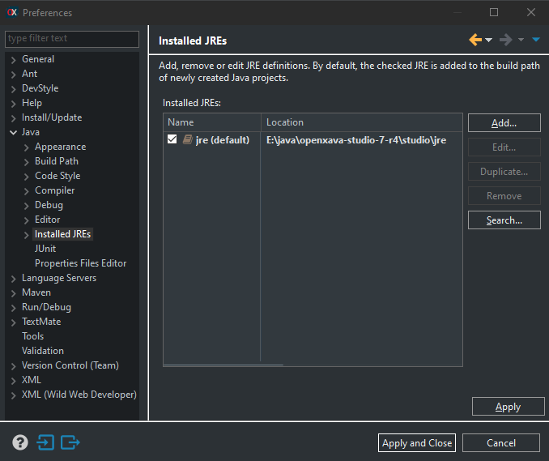
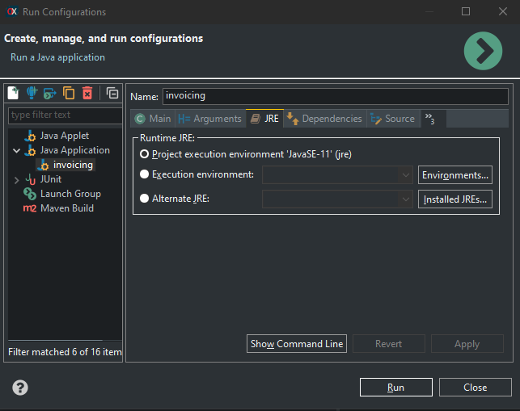
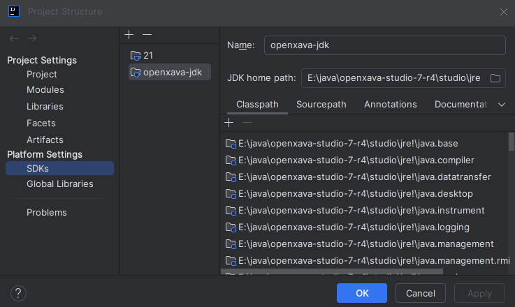
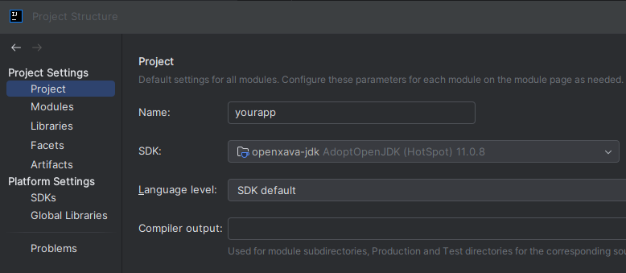

Starting from OpenXava 7.5, you can enjoy hot code reloading while developing your application.
This means you can modify any part of the code, save it, go to the browser and see the updated application.
Everything happens instantly, without needing to build, run Maven install, restart the application,
or even reload the page in the browser.
These are the changes you can make to your application without restarting it.
Most of them take effect without even reloading the browser page:
- Java code: Add, remove, or modify fields, methods, annotations, classes (including anonymous ones),
static members, and enumeration values. Anonymous class redefinition and static member initialization
are properly handled.
- Calculated properties: You can add, remove, or modify a calculated property in an entity and it will
immediately appear in the application, both in list and detail modes.
- OpenXava annotations: If you change, add, or remove OpenXava annotations like @View, @DescriptionsList
or @Tab, you'll also see the effect immediately.
- Persistent properties: When adding, modifying, or removing a persistent property from an entity,
it will be immediately visible in the user interface, in both detail and list modes. Additionally,
if schema evolution is enabled, the corresponding column will be created in the database table.
- New entities: If you create a new class and annotate it with @Entity, it will not only be
recognized but will automatically have a new module available (in the left menu and via URL).
If schema evolution is enabled, the table will be created in the database. In this case,
you need to press the reload button in the browser to see the new module.
- Controllers: If we add or remove controllers in controllers.xml, add, modify or change actions
in a controller, etc. Everything is recognized immediately, with actions appearing (or disappearing)
as soon as we trigger an action in the user interface.
- Application: We can add, modify and remove modules in application.xml. New modules are visible
after pressing reload in the browser.
- Labels and messages: If we change labels and messages in i18n files, it also takes effect without
restarting the application. However, in this case, you need to reload the browser to see the new labels.
It's not necessary to start in debug mode for changes to be recognized, but you do need to start with
the Java from OpenXava Studio 7 R4.
Java included in OpenXava Studio 7 R4
For code reloading to work, it's necessary to run the application with the Java included in OpenXava Studio 7 R4.
This Java is a JDK 11 based on DCEVM that integrates HotswapAgent, and is specially tuned to work well with
OpenXava's hot reloading.
This JDK is found in the OpenXava Studio 7 R4 distribution, in openxava-studio-7-r4/studio/jre.
If you run OpenXava Studio on a clean machine without Java and in a new workspace, this Java should be used
by default. However, if you already have other JDKs on your computer or have a workspace where you've registered
other JDKs, your application might not be using the JDK with HotswapAgent and therefore class reloading won't work.
You'll know if you're running the correct JDK if you see these lines in the log when starting your application:
HOTSWAP AGENT: 13:40:23.126 INFO (org.hotswap.agent.HotswapAgent) - Loading Hotswap agent {1.4.1} - unlimited runtime class redefinition.
Starting HotswapAgent '/home/theuser/openxava-studio-7-r4/studio/jre/lib/hotswap/hotswap-agent.jar'
If not, in OpenXava Studio, go to Window > Preferences > Java > Installed JREs and verify that you
have a JRE pointing to openxava-studio-7-r4/studio/jre, as shown here:

If it's not there, add it yourself. Also, remove any other Java 11 you have registered.
Try running your application again.
If it still doesn't run Java with HotswapAgent, you might have Java 1.8 recognized by OpenXava Studio and
your project might be configured to work with Java 1.8, so it chooses Java 1.8 instead of Java 11
(the one from OpenXava Studio). To fix this, go to your project's pom.xml and change:
<properties>
...
<maven.compiler.source>1.8</maven.compiler.source>
<maven.compiler.target>1.8</maven.compiler.target>
</properties>
To:
<properties>
...
<maven.compiler.source>11</maven.compiler.source>
<maven.compiler.target>11</maven.compiler.target>
</properties>
Then right-click on your project and choose Maven > Update Project...
This should make it work.
If you want to continue compiling with Java 1.8 and therefore don't want to change the pom.xml,
that's not a problem. Go to Run Configurations:

Find your application and in the JRE folder, make sure your application runs with the OpenXava Studio JDK:

If not, change it - you might need to use the Alternate JRE option.
IntelliJ
You can also enjoy hot code reloading using IntelliJ. The trick is to run the application with the JDK
included in OpenXava Studio 7 R4. You'll need to download OpenXava Studio, even if it's just to use its JDK.
Register the JDK included in OpenXava Studio 7 R4 in your IntelliJ. Go to File > Project Structure.
There in the SDKs section add the JDK found in openxava-studio-7-r4/studio/jre:

Then in the Project section, choose this JDK as the SDK for the project:

Keep in mind that IntelliJ does not compile the code automatically when the application is running,
so after changing the code you have to press the Build button, the one with the little hammer,
for it to compile and be able to see the updated changes.
Visual Studio Code
To use hot code reloading with Visual Studio Code you need to run the application with the JDK included
in OpenXava Studio 7 R4, so you'll need to download OpenXava Studio, even if it's just to use its JDK.
For Visual Studio Code to recognize your JDK add this to your user's settings.json:
"java.configuration.runtimes": [
{
"name": "JavaSE-11",
"path": "/home/youruser/openxava-studio-7-r4/studio/jre",
"default": true
}
]
Visual Studio Code compiles the code automatically as you edit it, just like OpenXava Studio,
so you just have to touch the code and go to the browser to see the application changed immediately.
The hot reloading mechanism is designed for optimal performance, loading just the necessary metadata
only when needed or restarting the Hibernate session only when the persistent part of an entity is
modified. Additionally, in production where you use a different JDK than in development, the reloading
mechanism is disabled.
Sometimes you are developing a library or a project that is a dependency of the current project,
and you would like to see the results instantly when you change the library code too. For this case,
you can start your application indicating a list of extra classpaths. Edit your launcher class and
write something like this:
public static void main(String[] args) throws Exception {
AppServer.run("yourapp", "../yourlib/target/classes");
}
Now when something changes in ../yourlib/target/classes it will also be reloaded automatically.
This allows you to develop your library testing it in a final application, with the same agility as
with any other application.
Indicating extra classpaths when starting the application is available since version 7.5.
XavaPro
In XavaPro 7.5, there are significant improvements regarding module availability during development. When using Hot code reloading:
- When you add a new module to a XavaPro application, either by defining it in application.xml or by creating a new JPA entity,
the module appears immediately in the menu, in the root folder.
- The new module is automatically assigned to the "user" role, if this role exists.
- Similarly, if you start the application with the JDK that includes Hotswap Agent (the one included in OpenXava Studio 7 R4),
any modules added while the application was stopped will be recognized when the application starts.
This streamlines the development process, as you no longer need to manually add new modules to the "user" role to make them available.
However, in production environments (where Hotswap Agent is not used), the behavior remains unchanged for security reasons:
new modules must be explicitly assigned to a role to be available to users.